GENERATIVE AI · COURSE HANDBOOK
생성형 AI를 이해하고,
나의 일과 창작에 연결하기.
모델의 원리부터 프롬프트, 멀티모달 창작과 프로젝트까지.
일곱 단계로 이어지는 GenAI Core 강의교안입니다.
YOUR LEARNING JOURNEY
강의교안
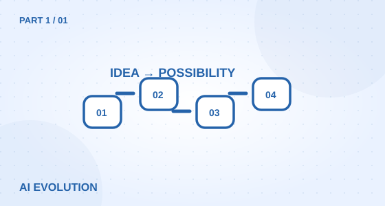
PART 1 이해
LESSON 01↗
생성형 AI 등장 배경
- 생성형 AI 등장 이전 시장 현황
- 생성형 AI가 대두된 사회적/기술적 필요성 이해
- 기존 AI와 생성형 AI의 차이점 이해
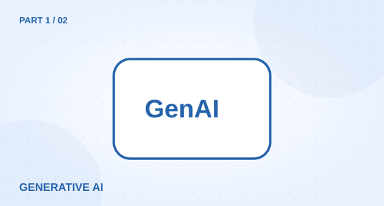
PART 1 이해
LESSON 02↗
생성형 AI 개념 및 현황
- 생성형 AI 개념
- 생성형 AI 기초 어휘 정의
- 생성형 AI 기본 구동방식(입출력)
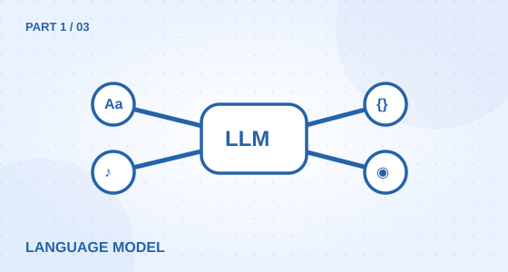
PART 1 이해
LESSON 03↗
LLM 구조와 언어 생성 원리
- Transformer 모델과 Attention 메커니즘의 원리
- 토큰화(Tokenization)와 임베딩(Embedding)의 이해
- 다음 단어 예측(Next Word Prediction) 및 확률적 선택 과정
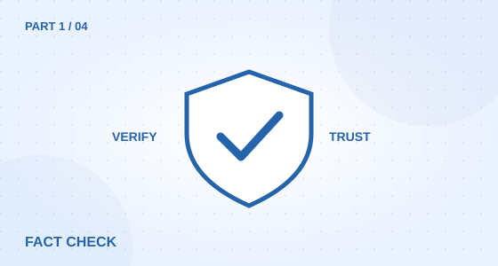
PART 1 이해
LESSON 04↗
할루시네이션(Hallucination)의 이해
- 할루시네이션(환각 현상)의 정의와 발생 이유
- 검증 가능한 프롬프트 설계 및 팩트 체크 노하우
PART 2 표현
LESSON 05↗
프롬프트 구조 이해
- Role·Context·Format·Task 구조 학습
- Prompt Engineering 핵심 문법- ChatGPT·Claude·Gemini 비교 실습
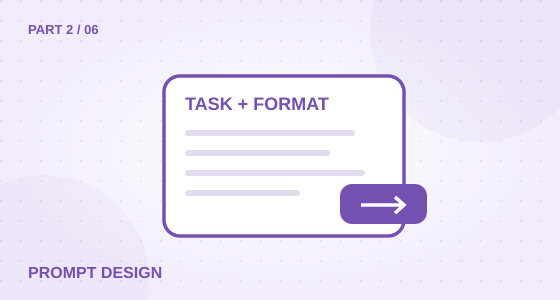
PART 2 표현
LESSON 06↗
효과적인 프롬프트 설계
- 상황형·목표형 프롬프트 작성법
- Output 포맷 지정 및 결과 튜닝
- 프롬프트 개선 및 피드백 비교
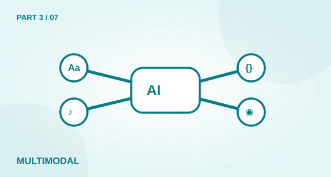
PART 3 멀티모달 경험
LESSON 07↗
멀티모달 AI 이해 및 확장
- 멀티모달 AI의 개념과 전체 구조 이해
- 주요 멀티모달 모델 유형 및 작동 원리
- 실생활·산업 분야 멀티모달 활용 사례 분석
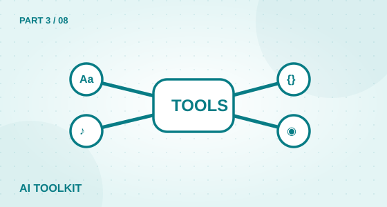
PART 3 멀티모달 경험
LESSON 08↗
AI 도구별 개념 이해
- ChatGPT, Claude, Leonardo, Flow, Runway, VEO 비교
- 각 도구별 강점 및 활용 영역 정리
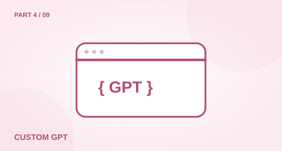
PART 4 창작
LESSON 09↗
Custom GPT 제작
- GPT Builder 구조 이해 (Role, Knowledge, Action)- Custom GPT 제작 실습
- 교육용·업무용 GPT 사례 분석
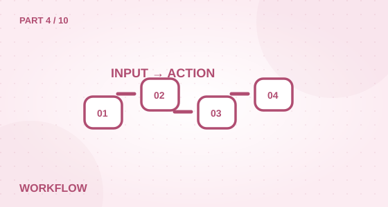
PART 4 창작
LESSON 10↗
워크플로우 자동화 이해
- AI 워크플로우 자동화 이해
- AI Chaining 개념 구조 이해
- 자동화 시나리오 구현(Zapier, n8n 등 비교)
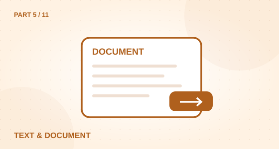
PART 5 활용
LESSON 11↗
Text 활용법 및 실습
- 텍스트 생성의 기본 이해와 기초 실습
- 문서 기반 활용 실습
- 실전 응용: AI로 하루 업무 자동화
PART 5 활용
LESSON 12↗
Image 활용법 및 실습
- 프롬프트 원리와 도구 활용
- 스타일 변환과 리터치
- 다양한 이미지생성형 AI 도구 실습
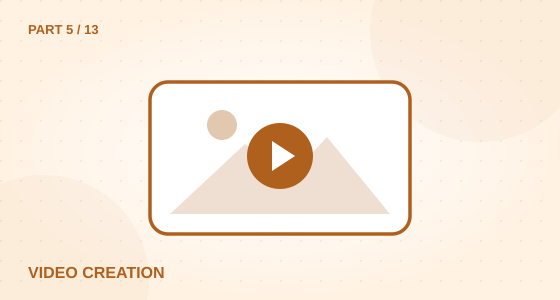
PART 5 활용
LESSON 13↗
Video 활용법 및 실습
- Sora, Veo 등을 활용한 음악 생성
- 컷 구성 및 스토리보드 작성
- 영상 톤·카메라 연출 실습
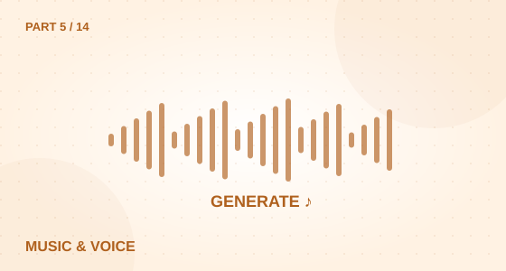
PART 5 활용
LESSON 14↗
Music / TTS 활용법 및 실습
- MusicFX, Suno 등을 활용한 음악 생성
- ElevenLabs 등을 활용한 AI 음성(TTS)생성
- 감정 및 스타일 조절 실습
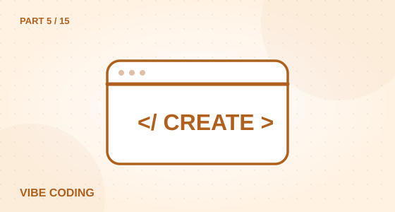
PART 5 활용
LESSON 15↗
VibeCoding 활용법 및 실습
- Vibe coding 이해
- 다양한 도구의 활용
- 프롬프트 코딩 실습
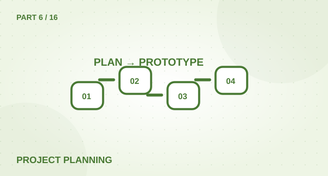
PART 6 적용
LESSON 16↗
프로젝트 기획
- 주제 선정 및 문제 정의
- 타깃 유저 분석·데이터 설계
- 기획서 작성 및 산출물 목표 설정
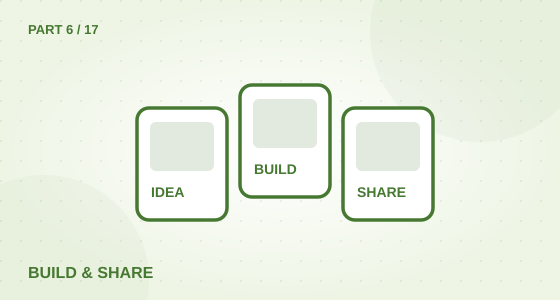
PART 6 적용
LESSON 17↗
프로젝트 제작 및 발표
- 생성형 AI 도구 통합 제작
- 결과 발표 및 피드백 세션
- 결과물 발전 전략 토론
PART 7 전망
LESSON 18↗
AI 윤리와 책임 있는 활용
- 데이터 편향·저작권 이슈
- 딥페이크 사례 및 대응 방안
- Responsible AI 사례 분석
PART 7 전망
LESSON 19↗
AI와 직업의 미래
- 산업별 직무 변화 트렌드
- 신직업·신스킬 트렌드
- 커리어 전략 수립
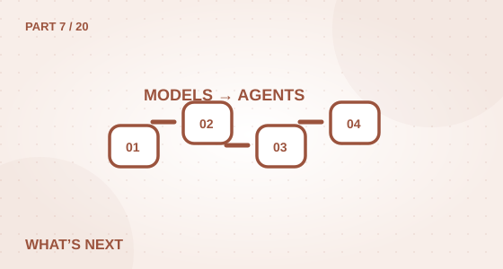
PART 7 전망
LESSON 20↗
미래 트렌드 및 발전 방향
- GPT, Claude, Gemini 등 모델 진화
- 멀티모달 통합 및 AI 에이전트 확장
- 산업별 적용 전망
검색 결과가 없습니다. 다른 검색어를 입력해 주세요.